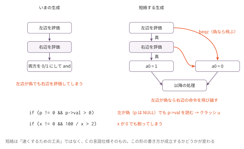

短絡評価 — && と || の本当の意味
今日のゴール
&& と || を、ISO C の規格どおり必要なときだけ右辺を評価する形に直す。
if (p != 0 && p->val > 0) のような、いまは書けない書き方が書けるようになる。
この回の位置づけ
| 項目 | 内容 |
|---|---|
| 必須の前提 | コマ12（構造体）まで。短絡の考え方そのものは関数呼び出しまでで足りるが、tests/null_guard.c が struct を使う（短絡が要る代表例の p != 0 && p->val > 0 がポインタとフィールド参照そのものなので避けられない）。完了条件のうち golden.py は完成した final/mycc.py を土台に fixed17 を回すので、やり切るにはコマ15 も要る |
| 推奨の前提 | — |
| 改変しない | mycc.py、scaffold/、ラッパー semcc.py（配布済み・完成品） |
| 編集する | shortcircuit.py |
| 完了条件 | check.py の全 Step が PASS になり、golden.py が短絡の要るテストの通過と fixed17 全通を報告する |
| コマ数 | 1 |
| 仕様との関係 | 仕様の内側。language_spec.md は && / || を「短絡しない」と定めており、実装はそのとおりに動いている。この回はずれを仕様の側で直す — 仕様が例外 E3 として自ら明記している ISO C との差を、C の側へ寄せる |
| 備考 | 意味論発展シリーズの第1回。仕様が本物の C とわざと違えている点（例外 E3）を C の側へ寄せる回 |
この言語の仕様が本物の C とわざと違えている点を、C の側へ寄せる回である。
language_spec.md は && / || について「両辺を必ず評価する（短絡しない）」と
明記している（例外 E3）。実装はそのとおりに動いており、バグではない。
この回で書き換えるのは言語の意味論のほうである。
いまのコンパイラは何をしているか
a && b に対して、いまのコード生成はこうなっている。
# 左辺を評価して a0 へ
# a0 をスタックへ退避
# 右辺を評価して a0 へ
# 退避した左辺を a1 へ
snez a1, a1 # 左辺を 0/1 に
snez a0, a0 # 右辺を 0/1 に
and a0, a1, a0両辺を必ず評価している。 これは language_spec.md の演算子節・評価順序節が
定めているとおりの動作で、実装のバグではない（例外 E3）。
しかし本物の C では、&& と || は特別扱いされている。
左辺だけで結果が決まる場合、右辺は評価されない（short-circuit evaluation）。
これは「速くするための最適化」ではなく、言語の意味そのものである。 右辺が評価されないことに依存した書き方が、C では日常的に使われるからである。 この回でやるのは、自分の言語をその意味論へ寄せることである。
何が壊れるのか

いまの実装で次を書くと、実際に落ちる。
if (p != 0 && p->val > 0) { ... } // p が NULL でも p->val を読む → クラッシュ
if (i < n && p[i] == x) { ... } // 範囲外アクセス
if (x != 0 && 100 / x > 2) { ... } // x が 0 でも割る1行目は、コマ12 の連結リストで自然に書きたくなる形である
（実際、コマ12 の list_sum は while (head != 0) と head->val を
2つの文に分けて書いてある。分けざるを得なかった、とも言える）。
|| も同じで、if (p == 0 || p->val == 0) は「NULL なら真、そうでなければ中身を見る」
という定番の書き方である。
この C との差は、テストが通ってしまうのが厄介なところである。
値としては正しいので、コマ4〜15 のどのテストでも露見しない。
C のつもりで p != 0 && p->val と書いた瞬間に、初めて牙をむく。
だから仕様はこの差を例外 E3 として明記し、コマ4・コマ12 でも
「条件は2つの if に分けて書くこと」と繰り返している。
「テストが通る = C と同じ」ではない。テストは書いたことしか確かめない。
どう直すか — 分岐で作る
短絡評価は、算術ではなく制御フローである。
コマ4 の if と同じく、ラベルと beqz で作る。
a && b:
左辺を評価 → a0
beqz a0, Lfalse ← 左が偽なら、右辺の命令を飛び越す
右辺を評価 → a0
beqz a0, Lfalse
li a0, 1
j Lend
Lfalse:
li a0, 0
Lend:|| はこの裏返しで、bnez（0 以外なら飛ぶ）を使い、
左辺が真なら Ltrue へ飛んで 1 にする。
結果が 1 か 0 に正規化される点は、いままでと同じである
（だから fixed17 は通り続ける）。
なぜ && は「演算子」なのに分岐が要るのか。
+ や * は、両辺の値が揃ってはじめて計算できる。
一方 && は、左辺の値によって右辺を評価するかどうかが変わる。
これは if と同じ性質で、実は演算子の顔をした制御構文である。
実は、この性質を持つ演算子はもう1つ実装済みである。三項演算子 a ? b : c は
「条件によって片方しか評価しない」ため、lecture の codegen_Cond は最初から
beqz で分岐してどちらか一方の腕しか評価しない形で生成している
（then と else_ の両方を評価してから選ぶ、という実装にはなっていない）。
つまり ?: は既に正しく分岐生成している兄弟であり、
&& / || だけが両辺を評価する形のまま取り残されていた、ということになる。
実装
| Step | 実装対象 | 内容 |
|---|---|---|
| 1 | gen_and |
beqz で右辺を飛ばす |
| 2 | gen_or |
bnez で右辺を飛ばす |
cg.new_label()（コマ4 で使ったラベル生成）で飛び先を2つ作る。
python3 semcc.py tests/null_guard.c # 生成結果を見る
python3 semcc.py tests/null_guard.c | grep beqzテスト
python3 check.py # 生成された命令列の構造を確認(未実装は SKIP)
python3 golden.py # 短絡が要るテスト + fixed17golden.py は3つを続けて確認する。
- 短絡なし（いまの mycc）では
tests/が落ちること - 短絡ありで全部通ること
fixed17が壊れていないこと
tests/ の中身は次の4本である。
| テスト | 確認内容 |
|---|---|
null_guard.c |
p != 0 && p->val が NULL でも落ちない |
div_guard.c |
x != 0 && 100 / x がゼロ除算しない |
value.c |
&& / || が返す値（1 か 0）が正しい |
side_effect.c |
右辺の関数呼び出しが実際に呼ばれない（グローバル変数で観測） |
side_effect.c が本質的である。「評価されないこと」は、
副作用を観測してはじめて確かめられる。
発展課題
!との組み合わせ:!(a && b)と!a || !b（ド・モルガン）が 同じ結果になることを確かめる。ただし評価される回数は違う。どう違うか?:と見比べる: lecture のcodegen_Cond（すでに正しく分岐生成している）を読み、 自作のgen_andと見比べる。a && bをa ? (b != 0) : 0に書き換え、 生成される命令列を比較する- B1 の定数畳み込みと組み合わせる:
0 && f()は畳み込んでよいか。f()に副作用があっても消してよいのか考える （C の規格では、短絡によりf()は呼ばれないので消してよい） - 命令数を測る:
count_insns.pyで短絡あり／なしを比べる。 条件が複雑なプログラムでは、短絡版のほうが命令数は増えることもある （分岐とラベルが増えるため）。それでも短絡が正しい理由を説明する
コラム: 言語ごとの違い。
&& / || の短絡は C・Java・Python などほとんどの言語にあるが、
短絡しない論理演算子を別に持つ言語もある（Ada の and / and then、
VB の And / AndAlso、Pascal の処理系オプションなど）。
「両方必ず評価してほしい」場面（両辺に副作用がある場合）があるからである。
本物の C では、短絡しない版がほしければビット演算 & / | で書ける
（値が 0/1 に正規化されないので意味は微妙に違う）
—— ただし、この言語にはビット演算 & / | そのものが無い。